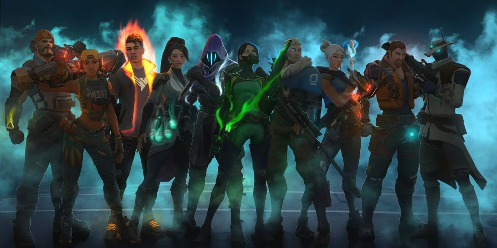
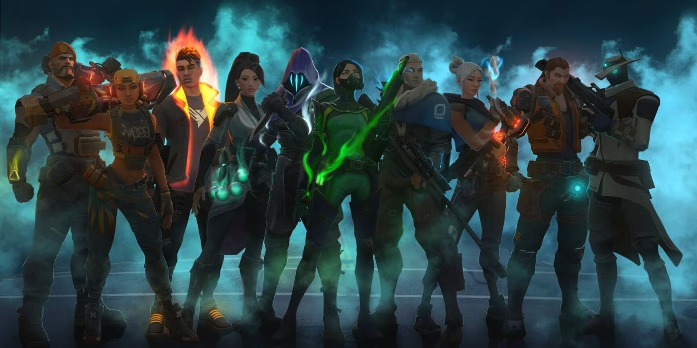

Call of Duty 4: Modern Warfare
Released in 2007 by Infinity Ward, Call of Duty 4: Modern Warfare redefined the modern military FPS genre. Known for its cinematic single-player campaign and addictive multiplayer modes, it introduced mechanics like killstreak rewards and customizable loadouts that became staples in subsequent Call of Duty games and other FPS titles.
PUBG: Battlegrounds
PUBG: Battlegrounds, or PlayerUnknown's Battlegrounds, is a popular multiplayer battle royale game released in 2017. It features up to 100 players landing on an island, scavenging for weapons and gear to survive while competing to be the last survivor in a shrinking play area.
Counter-Strike: Global Offensive 2
Counter-Strike 2 (CS2) is a round-based, 5v5 tactical FPS with an Attackers vs. Defenders setup and no respawns, meaning if a player is eliminated they will not respawn until the next round.
Call of Duty 4: Modern Warfare

PUBG: Battlegrounds
Counter-Strike: Global Offensive 2


 
